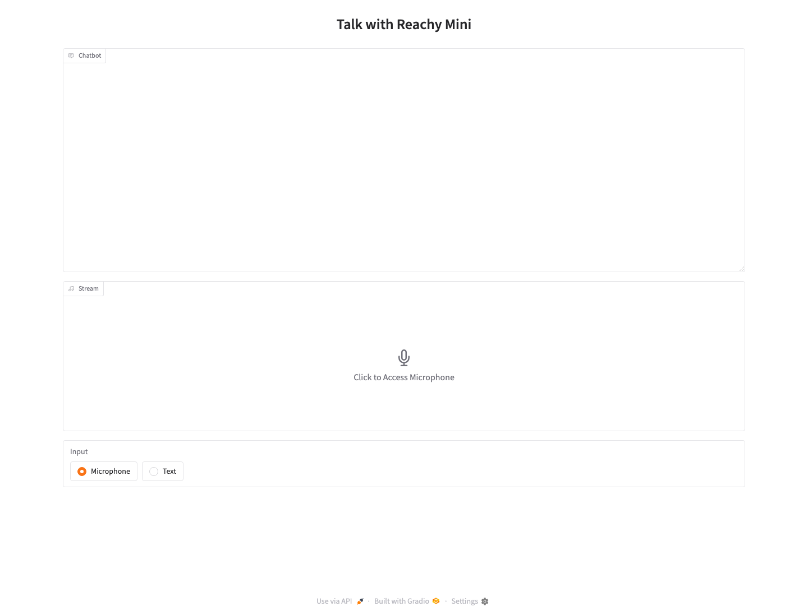

Reachy Mini Conversation Demo¶
This project runs a local Reachy Mini conversation demo for OpenShell. It starts the Reachy Mini simulator, launches a Gradio browser UI, and lets you talk to Reachy with either microphone or text input. The preferred first path is OpenAI Realtime with the simulator.
Source: projects/reachy-mini-openshell
Quick Start¶
Requirements:
- macOS
- Python 3.10, 3.11, or 3.12
uvOPENAI_API_KEYexported in the shell that starts the app, with access to the OpenAI Realtime API
Start here: OpenAI Realtime with the Reachy Mini simulator.
cd projects/reachy-mini-openshell
cp .env.example .env
export OPENAI_API_KEY=sk-...
./scripts/start-local.sh
The launcher syncs dependencies, validates .env, starts
reachy-mini-daemon --sim, and prints the Gradio URL. It uses
http://127.0.0.1:7860/ when available and picks the next free port through
7899 when needed.
Keep the launcher terminal open. Ctrl+C stops the app and the simulator it
started.
The checked-in .env.example already selects BACKEND_PROVIDER=openai_realtime.
API keys, base URLs, and model IDs are configured in .env, not in the browser
UI.
Backend Selection¶
Set one backend in .env:
BACKEND_PROVIDER |
Use When |
|---|---|
openai_realtime |
First-time setup and the fastest full voice demo with OpenAI Realtime. |
local_stt |
Optional local ASR through Riva ASR NIM or another STT service before Chat Completions and TTS. |
hf_realtime |
Optional Pollen/Hugging Face realtime path. |
Use the single checked-in .env.example as the starting point:
Credentials and model routes are read from .env and exported environment
variables referenced by .env. The browser UI does not accept API keys, base
URLs, or model IDs.
For OpenAI Realtime, the normal setup uses the global OPENAI_API_KEY exported
in the shell that starts the app:
BACKEND_PROVIDER=openai_realtime
OPENAI_REALTIME_BASE_URL=https://api.openai.com/v1
OPENAI_REALTIME_MODEL=gpt-realtime-2
OPENAI_REALTIME_VOICE=cedar
Optional Riva ASR¶
Use this path after the OpenAI Realtime path is working, or when you explicitly want microphone input transcribed by Riva before text is sent through Chat Completions and Reachy tools.
Requirement: a deployed Riva ASR NIM endpoint reachable from the app host.
The endpoint must expose:
GET /v1/health/readyPOST /v1/audio/transcriptions
Readiness check:
Expected response:
Then set the app to use the Riva ASR HTTP transcription route:
BACKEND_PROVIDER=local_stt
CHAT_API_KEY=${NVIDIA_INFERENCE_API_KEY}
CHAT_BASE_URL=https://inference-api.nvidia.com/v1
CHAT_MODEL_NAME=azure/anthropic/claude-opus-4-8
STT_API_KEY=not-needed
STT_BASE_URL=http://<riva-host>:9000/v1
STT_MODEL_NAME=parakeet-1-1b-ctc-en-us
TTS_API_KEY=${OPENAI_API_KEY}
TTS_BASE_URL=https://api.openai.com/v1
TTS_MODEL_NAME=gpt-4o-mini-tts
TTS_VOICE=cedar
This setup uses Riva for ASR. Speech output still uses the configured
OpenAI-compatible TTS_* endpoint. Riva TTS NIM exposes a different HTTP
route, /v1/audio/synthesize, and is not wired into this app yet.
STT_MODEL_NAME must match an offline model ID served by the Riva ASR endpoint.
If stt-probe reports stt_model_listed=no, use one of the model IDs reported
by that endpoint.
The microphone path is:
For non-Riva STT, keep BACKEND_PROVIDER=local_stt and set STT_BASE_URL plus
STT_MODEL_NAME for that OpenAI-compatible transcription endpoint.
What To Expect¶
The daemon status endpoint is:
A healthy simulator daemon returns JSON with these key fields:
{
"type": "daemon_status",
"robot_name": "reachy_mini",
"state": "running",
"simulation_enabled": true,
"no_media": true,
"error": null,
"version": "1.8.0"
}
The full response contains more fields. state: "running" is the important
signal.
Open the Gradio URL printed by the launcher. The first screen should look like this:

Use Microphone for voice or Text for typed prompts. A good first prompt is:
Because the local simulator runs with --no-media and the app starts with
--no-camera, camera and head-tracking features are disabled. Conversation and
motion tools still work through the simulated daemon.
Useful Checks¶
Validate configuration without opening the browser:
Call the configured backend:
Check Riva/local-STT stages independently:
uv run reachy-mini-backend-check --live --stage stt-probe
uv run reachy-mini-backend-check --live --stage chat \
--seed-text "Reachy, use the sweep_look tool, then tell me what you did." \
--require-tool
uv run reachy-mini-backend-check --live --stage tts \
--seed-text "Hello, I am Reachy."
Run the fake local-STT smoke workflow when Riva or other external STT/TTS services are not ready:
Manual Startup¶
Use the launcher for normal development. Manual startup is useful when you need separate daemon and app terminals.
Simulator terminal:
uv run reachy-mini-daemon --sim --scene minimal --headless --no-media \
--fastapi-host 127.0.0.1 --fastapi-port 8000 \
--dataset-update-interval 0
App terminal:
Troubleshooting¶
| Symptom | Fix |
|---|---|
BACKEND_PROVIDER missing |
Copy .env.example to .env, then edit .env. |
| App cannot connect to Reachy | Use ./scripts/start-local.sh, or verify the daemon status endpoint reports state: "running". |
| OpenAI Realtime is not connected | Export OPENAI_API_KEY in the same shell that starts the app, then run uv run reachy-mini-backend-check --live. |
Local-STT text returns 404 |
Use a plain CHAT_BASE_URL ending in /v1 when required, and set CHAT_MODEL_NAME to the provider's exact model ID. |
| Riva/local microphone produces no response | Run the stt-probe check and confirm STT_BASE_URL exposes POST /audio/transcriptions. |
| Riva ASR readiness fails | Check http://<riva-host>:9000/v1/health/ready, GPU/container logs, and that the app can reach the host from macOS. |
Daemon reports MuJoCo is not installed |
Run uv sync from projects/reachy-mini-openshell, then start the daemon through uv run or the launcher. |